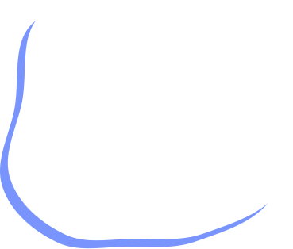

<section class="s-article">
    <div class="container">
        <div class="block__title">
            <h1>Реабилитация и уход за пожилыми после ДТП</h1>
        </div>
        <div class="article">
            <div class="nav">
                <div class="nav__image" style="background-image: url(../assets/img/article__nav.jpg);">
                    
                </div>
                <div class="nav__main">
                    <div class="nav__title">
                        Быстрая навигация
                    </div>
                    <div class="nav__links">
                        <a href="javascript:void(0)" class="nav__item">Важность активной реабилитации</a>
                        <a href="javascript:void(0)" class="nav__item">Эффективное восстановление в пансионате</a>
                        <a href="javascript:void(0)" class="nav__item">У нас только лучшее для ваших близких</a>
                        <a href="javascript:void(0)" class="nav__item">Пансионаты со специализацией на восстановлении после переломов</a>
                        <a href="javascript:void(0)" class="nav__item">Оформление и документы</a>
                        <a href="javascript:void(0)" class="nav__item">Еще один длинный заголовок для внутренней статьи</a>
                    </div>
                </div>
            </div>
        </div>
    </div>
</section>